有TRAIN近似区域提示的标注侧核验，不是盲推理或人类像素金标准。27个弱外观框、2个车辆组区域；其余弃权。未训练。
中文报告 · 弱标签JSONBetween James Dyson Building and Royal Cambridge Hotel, to the left of the white building, this red car is seventh from the right near the James Dyson Building.
区域内红车可辨；第七辆及完整具名地标关系尚未独立核验。
AI弱框：[[216, 213, 228, 237]]；不是已确认实例标签。
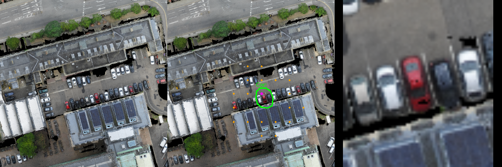
This is a black car parked at the corner of West Midlands Police Custody Suite closest to the entrance to the parking space. There is a black car on its right and a dark gray car on its left.
近似轮廓覆盖多辆黑车；当前图无法确定最接近入口的是哪辆。
AI弱框：[]；不是已确认实例标签。
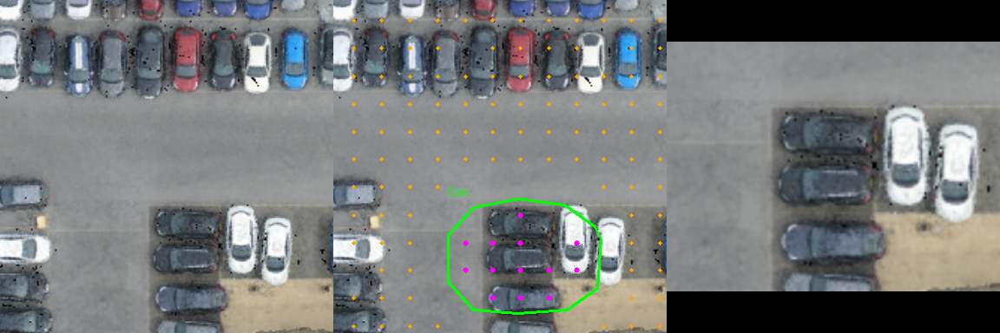
Between the Hopkins Building and the Genetics Building, this white car is seventh from the top next to the Genetics Building.
投影区域内连续多辆白车；第七辆的起算端及完整车排未确认。
AI弱框：[]；不是已确认实例标签。
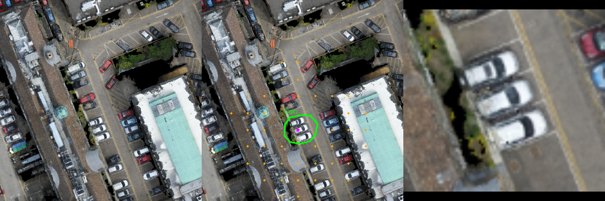
Red car in a parking lot at the Custodian Hut building on the first lane from the Genetics building. No is car next to it.
投影附近红车外观清楚，可作弱框候选；第一车道/完整地图关系未全部核验。
AI弱框：[[136, 195, 158, 221]]；不是已确认实例标签。
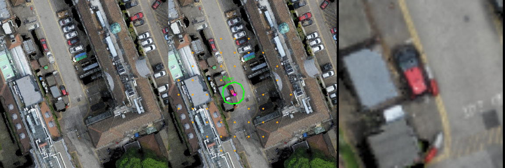
Dark car that is 5th from the left in the row of cars parked against the long side of the Genetics Building, in the parking area between the Genetics Building and the Hopkins Building.
候选在图像下缘、车体裁剪；第五辆与完整车排无法核验。
AI弱框：[]；不是已确认实例标签。
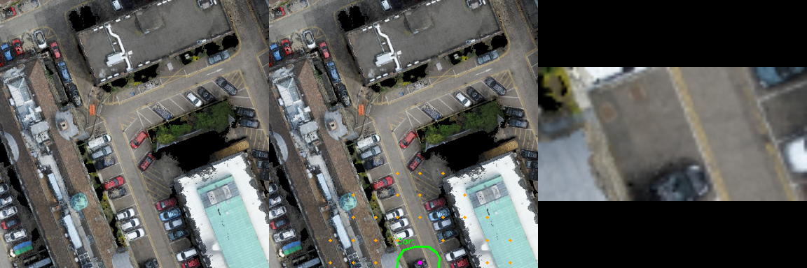
A white car parked in front of a building with grey roof situated at the left side of Perry Barr Methodist Church along the road named Aston Lane. A black car parked at its right side , no car parked at its left side.
近似区域内白车清楚，邻近深色车及另一侧空位可见；左右参考系仍未知。
AI弱框：[[263, 196, 297, 211]]；不是已确认实例标签。
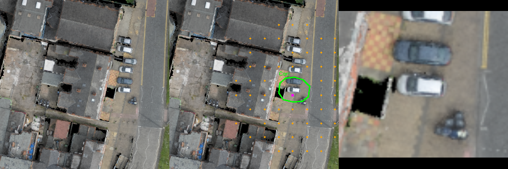
This is a light blue car parked in a space between Sir William Hardy Building and Geography Building. There is another white car parked behind it.
浅蓝车及相邻白车可辨，近似目标区域包含两车而非单一像素实例。
AI弱框：[[270, 83, 315, 113]]；不是已确认实例标签。
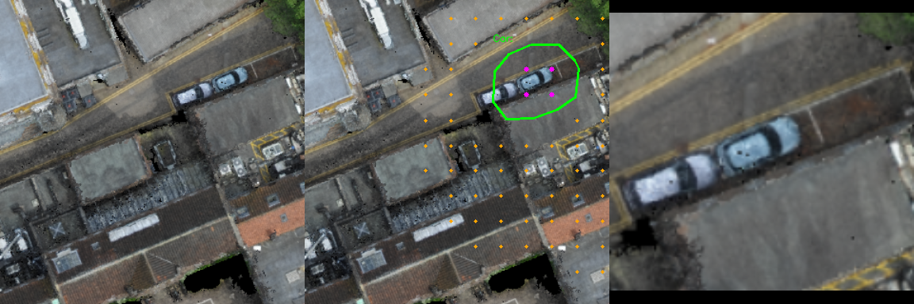
This white car is parked in a very large parking lot in between salmon Lane and Fitzroy Lane. It is on the top row, and it is in the middle of the parking lot. There is another white car with the black roof next to it and on the other side there is a red car
红车与黑顶白车之间的白车可辨；停车场整体顶排/地标身份未完整核验。
AI弱框：[[154, 172, 226, 207]]；不是已确认实例标签。
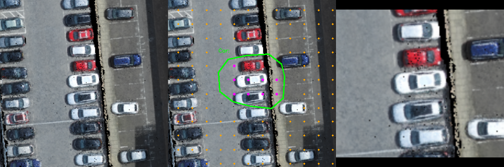
A dark blue car parked in the parking lot located between Oast House and Mill Lane. It is parked between a ligher blue car and a black car.
浅蓝与黑色车辆之间深蓝车可辨，局部邻车颜色关系有支持。
AI弱框：[[166, 225, 188, 269]]；不是已确认实例标签。
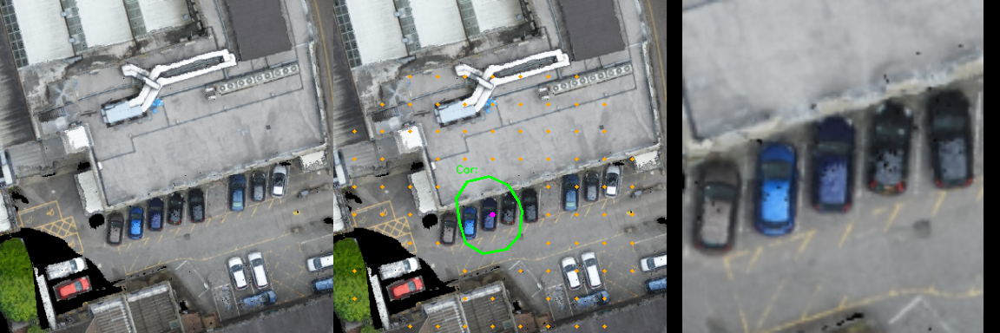
One red car behind one white car, and across from a black car on the opposite side of Priory Road, on the corner of beche Road and Priory Road next to the Cellarer's Chequer
红车被树冠明显遮挡，难绘完整可见实例框；不把树冠当车。
AI弱框：[]；不是已确认实例标签。
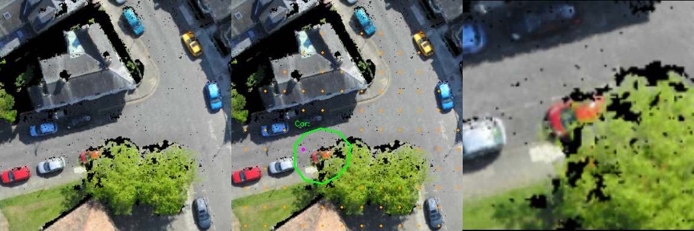
A white car parked in the big parking lot located between Birchfield Road and Wellington Road. It is parked in the middle section of the parking lot. There is a white car parked on its left side and no cars on its right side. It is facing a white and grey cars parked in the row of cars by the grass.
近似轮廓包含并排两辆白车；面向车辆时的左右约定未知。
AI弱框：[]；不是已确认实例标签。
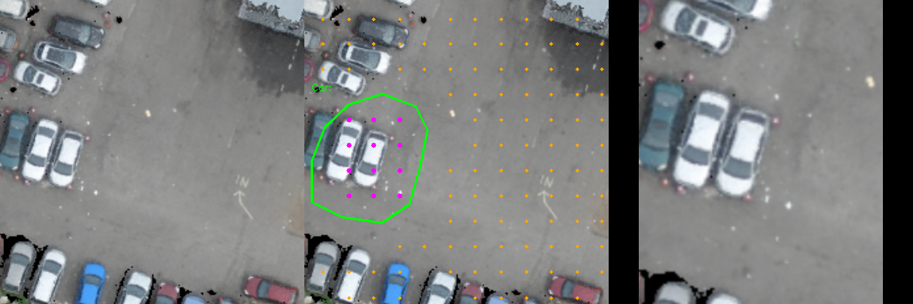
In the parking area between Fitzroy Lane and Eden Chapel, this dark blue car is parked north of a red car, fourth from the bottom.
近似区域有一辆完整深蓝/深灰车；north和第四辆的完整参考尚未核验。
AI弱框：[[185, 88, 263, 118]]；不是已确认实例标签。
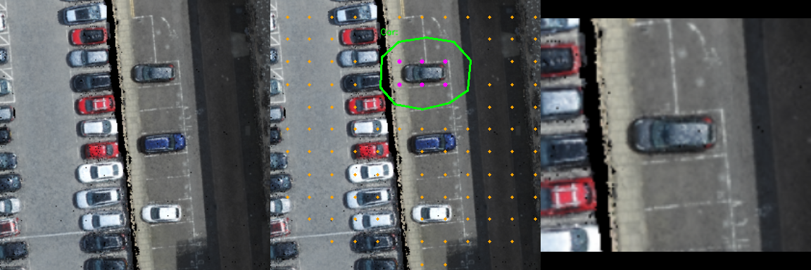
Between James Dyson Building and Royal Cambridge Hotel, to the left of the white building, this red car is fourth from the left near the James Dyson Building.
近似区域红车可辨；第四辆序数及其参考端尚未核验。
AI弱框：[[282, 295, 305, 325]]；不是已确认实例标签。
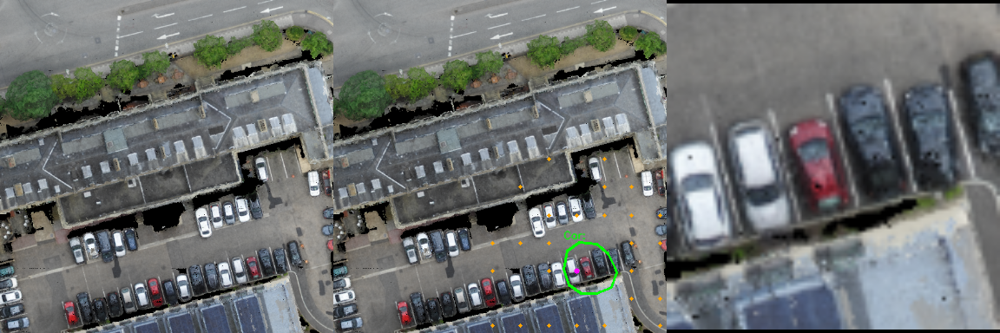
White car that is 2nd from the left in the row of cars parked against the long side of the Hopkins Building, in the parking area between the Hopkins Building and the Anatomy Building.
区域内车辆蓝白外观混合且细节不足，无法确认白车及第二辆关系。
AI弱框：[]；不是已确认实例标签。
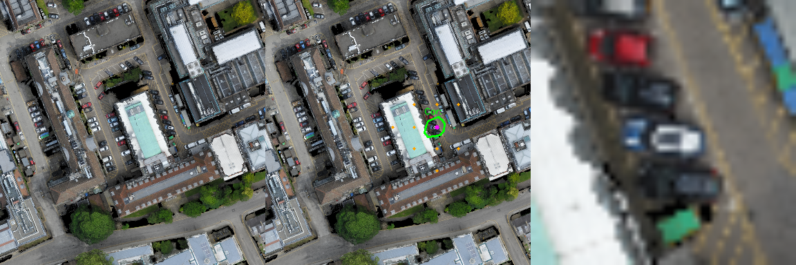
In the parking lot between Grafton West and Cambridge Community Kitchen, this dark gray car is parked is in the northmost row, tenth car from the right.
候选位于右边缘、车体部分裁剪；第十辆和最北排未完整确认。
AI弱框：[]；不是已确认实例标签。
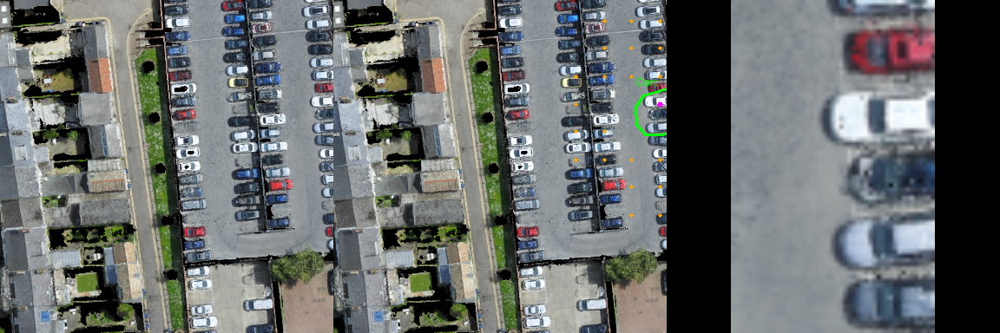
A black car in between two empty spaces, in the parking lot between the department of pharmacology and the MRC toxicology unit buildings off Tennis Court Road
深色车位于可见空位之间，近似区域中可作单车弱框候选。
AI弱框：[[128, 48, 161, 101]]；不是已确认实例标签。
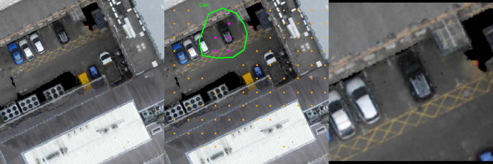
One light blue car parked in between the microbiology building and the molteno building, in front of the Downing college chapel
区域内浅蓝车可见，部分邻近树冠/建筑；只支持弱框候选。
AI弱框：[[163, 145, 184, 160]]；不是已确认实例标签。
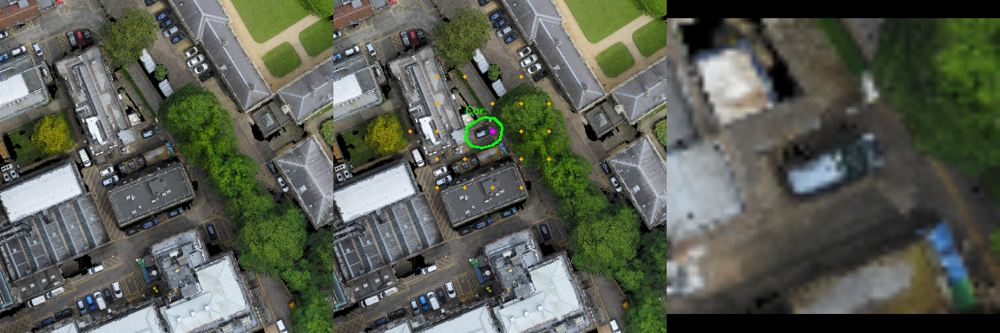
A bright blue car parked between another fairly bright blue car and a red car with a black roof in the rightmost car row in the middle section of the raised parking area past the Grifton west entrance.
红车与另一蓝车之间的较亮蓝车可辨，局部颜色排列有支持。
AI弱框：[[232, 185, 297, 216]]；不是已确认实例标签。
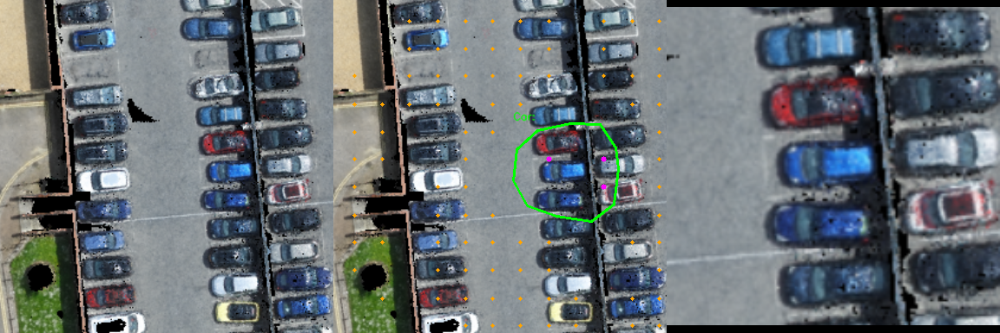
A light blue or greyish car parked in a parking lot located between Warkworth Terrace, Cambridge & Peterborough Probabtion Trus and Parkside Police Station. There are empty parking spaces on both sides of the car, but one parking spot over there is a white car.
独立浅蓝/灰车及两侧空位可辨，附近另一白车也可见。
AI弱框：[[168, 178, 186, 201]]；不是已确认实例标签。
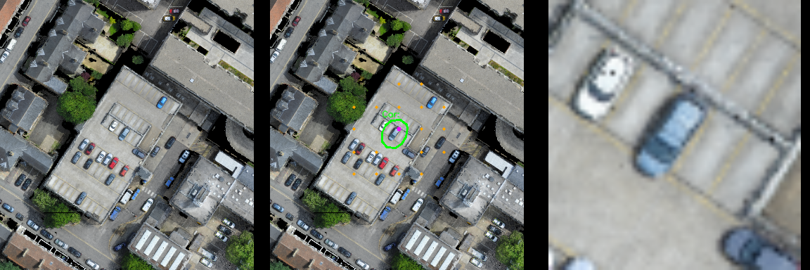
a white car parked in the parking area along the road named Aldridge road opposite to the W.D.M. Cars building, There is a triangular shaped ground in front of the parking area. Another white car parked behind it and no car parked at the left side of it.
近似目标区域在右边缘被裁剪，多辆白车仅部分可见，不能确认完整实例。
AI弱框：[]；不是已确认实例标签。
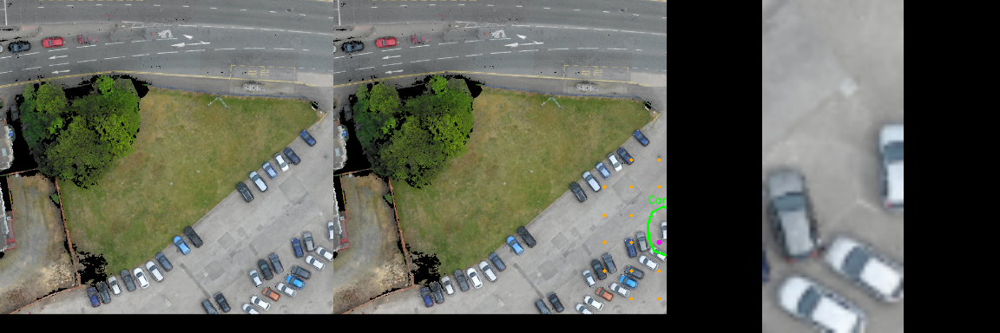
Black car in between another black car and the light brown car in a parking lot in between the James Dyson building and the Royal Cambridge Hotel, parked in front of the James Dyson building
轮廓内有数辆相似深色车，另一辆light-brown车的颜色也不明确。
AI弱框：[]；不是已确认实例标签。
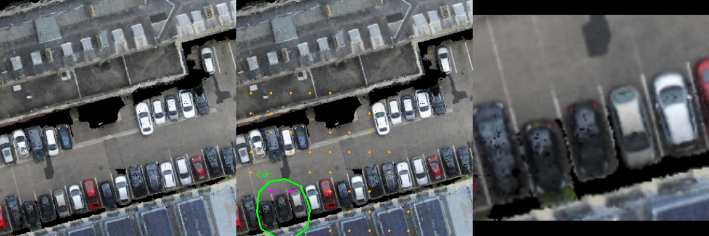
The black car parked behind a blue car on City Road, right in between Grafton Street and Paradise Street.
近似区域内黑车与蓝色邻车清楚；behind方向未强制转为世界坐标。
AI弱框：[[121, 217, 202, 268]]；不是已确认实例标签。
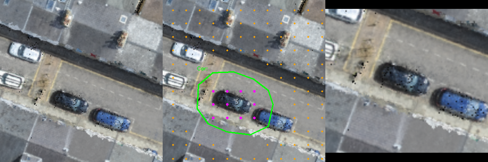
In the parking lot between Wesley Methodist Church and Epworth Court on King Street, this dark blue car is south of a red car and north of a tree.
深色车辆靠近图像下缘且有树冠遮挡，完整车体/实例关系不确定。
AI弱框：[]；不是已确认实例标签。
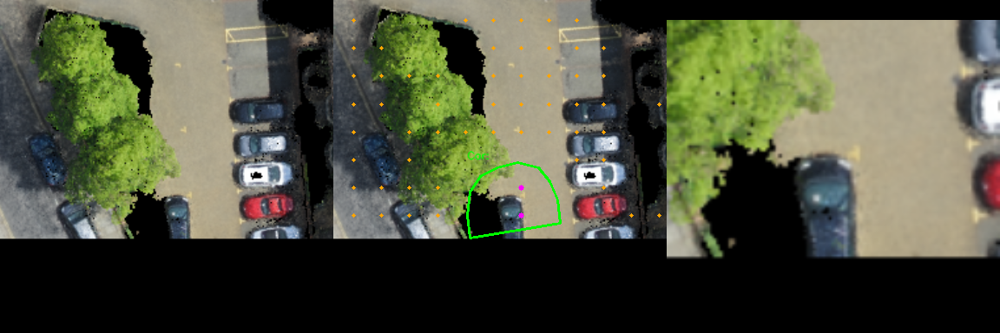
A car parked in a drive on Elm street across from Orchard Court. It is a long white car and it is halfway between Eden Street and Jesus Terrace.
独立车道中长白车清楚，可作当前RGB弱框候选。
AI弱框：[[110, 225, 156, 257]]；不是已确认实例标签。
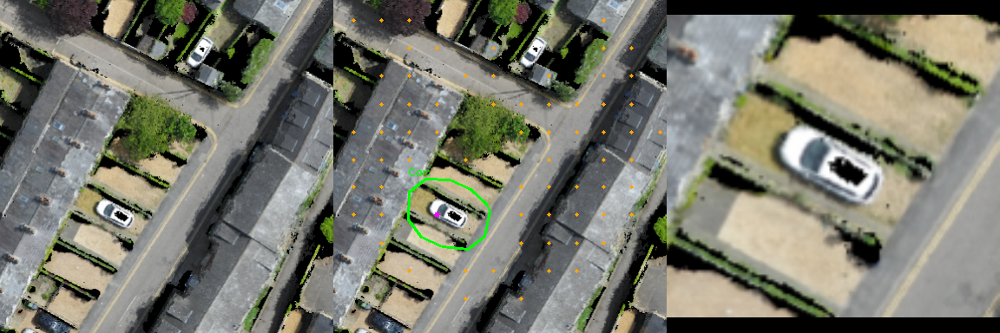
A white car in between a dark blue car and a black car, on the outside parking lot of the blue and white striped One-Stop building, in the row closest to the railroad, across from the St Teresa's court building
蓝车与黑车之间的白车可辨；原始Contour包含三个实例，不能整块作正例。
AI弱框：[[141, 116, 231, 153]]；不是已确认实例标签。
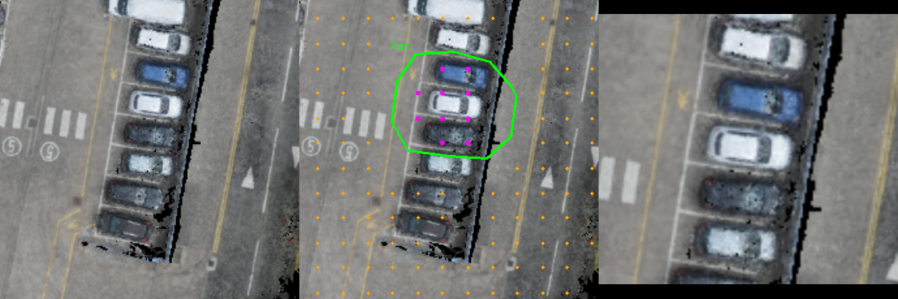
One red car parked next to two white cars, facing a black car, in between the Butterfield Cafe and the Maitland Robinson Library closest to Regent Street
两辆白车附近的红车清楚，局部颜色组可辨。
AI弱框：[[164, 111, 216, 144]]；不是已确认实例标签。
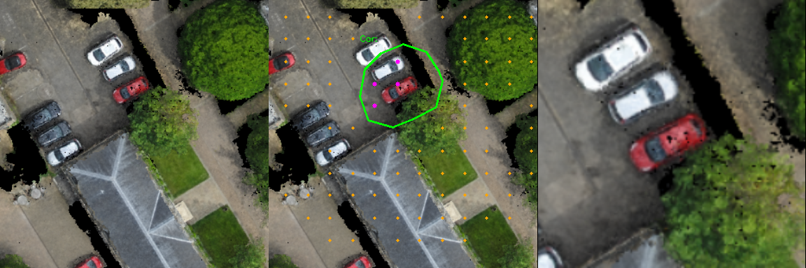
The light blue car parked by itself in front of the parking lot off of Ferry Path, between Hamilton Road and Chesterton Road.
空地中独立浅蓝车辆清楚，近似区域只含一辆主要车辆。
AI弱框：[[268, 198, 301, 258]]；不是已确认实例标签。
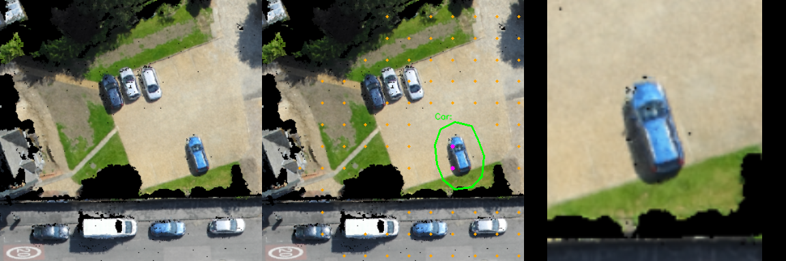
This is a blue car parked in front of Broadmeadows on Midsummer Meadows. On its left there are two cars, one black and one red.
红、黑、蓝并列中蓝车可辨，原轮廓却混入黑车。
AI弱框：[[121, 259, 156, 348]]；不是已确认实例标签。
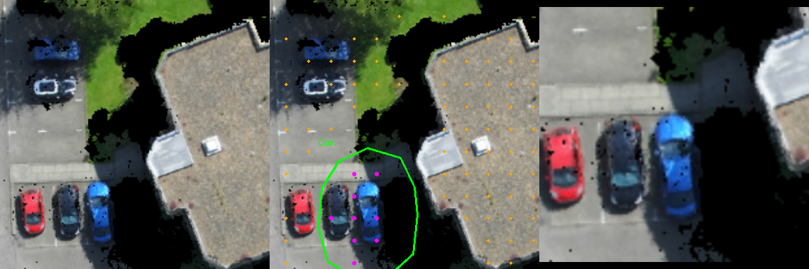
A black car parked in the parking lot located between University Chemical Laboratory and Panton Street. When facing the car there are two empty parking spots on its left side, a smaller dark grey car on its right side and a white car parked in front of it.
区域内深灰/黑车相似，面向车辆的左右及两空位无法可靠消歧。
AI弱框：[]；不是已确认实例标签。
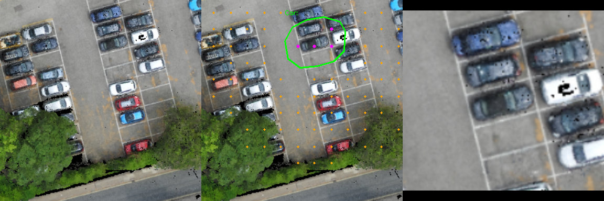
this is a black car, there is another black car next to it, and the parking space next to it is empty. these cars are in the parking lot between the Hopkins building and the Anatomy building, close to the Hopkins building. Where these cars are, there are two trees. There is one red car in the park where these cars are, these black cars are at the head of the parking row.
轮廓中两辆相似黑车，树木和空位只能确认车组，不能确定具体哪辆。
AI弱框：[]；不是已确认实例标签。
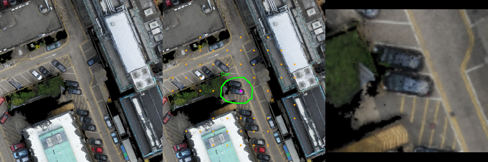
Between MRC Toxicology Unit and Department of Pharmacology, this dark blue car is first from the right.
候选在下缘明显裁剪且色彩不够明确，不能给完整实例框。
AI弱框：[]；不是已确认实例标签。
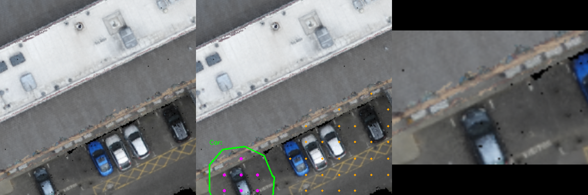
this is the white car, on the last floor of the multi-storey car park by the salmon lane, on the fitzroy lane side. On one side of this car are white, two black and three white cars in order, and on the other side are red, white, black and gray cars.
近似区域多辆白车；楼层及左右车列顺序不能从当前正射图充分核验。
AI弱框：[]；不是已确认实例标签。
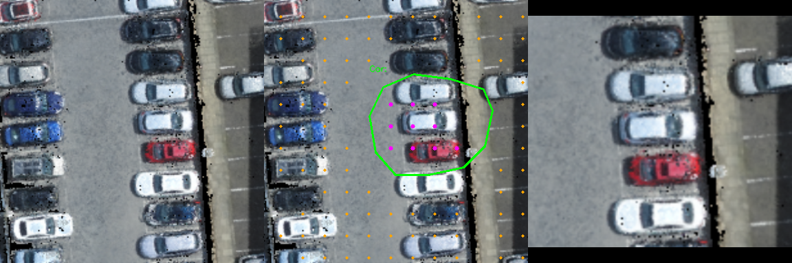
A white car is parked in front of a house with grey roof and white wall at the right side of the road named City road. A black car parked in front of it and no car parked behind it.
道路边白车与深色邻车可辨，区域内白车可作弱框候选；方向关系仍未完整核验。
AI弱框：[[215, 176, 234, 188]]；不是已确认实例标签。
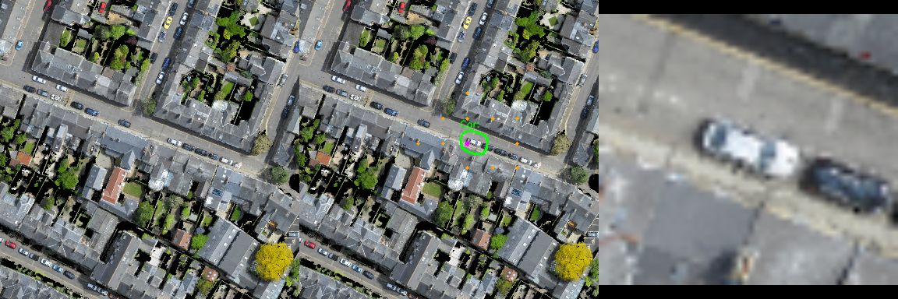
A white car that is next to two empty parking spots, parked in between the James Dyson building and the Royal Cambridge Hotel, parked in front of the royal Cambridge Hotel on the corner of trumpington Road and the fen Causeway
建筑内凹停车区域中白车及相邻空位可辨，可作弱框候选。
AI弱框：[[179, 175, 211, 230]]；不是已确认实例标签。
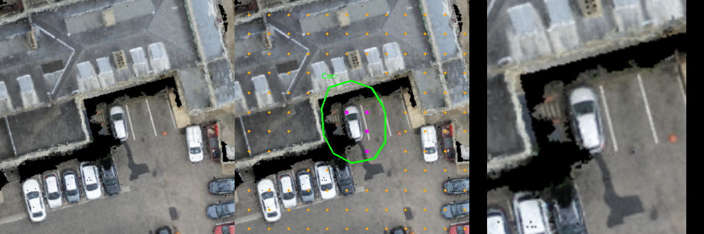
Red car in the parking lot in front of a brown /white house in between Birchfield road and Wellington road in the middle lane. It has a white car to the right and no car to the left. There is a black car diagonally parked behind it.
停车中间行红车可辨，与白车/空位局部关系有部分支持。
AI弱框：[[254, 301, 274, 318]]；不是已确认实例标签。
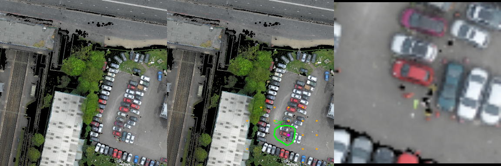
Between Craik-Marshall Building and Genetics Building , this black car is second car north of a red car.
近似区域两辆相似深色车辆，第二辆及north起算参照未可靠确认。
AI弱框：[]；不是已确认实例标签。
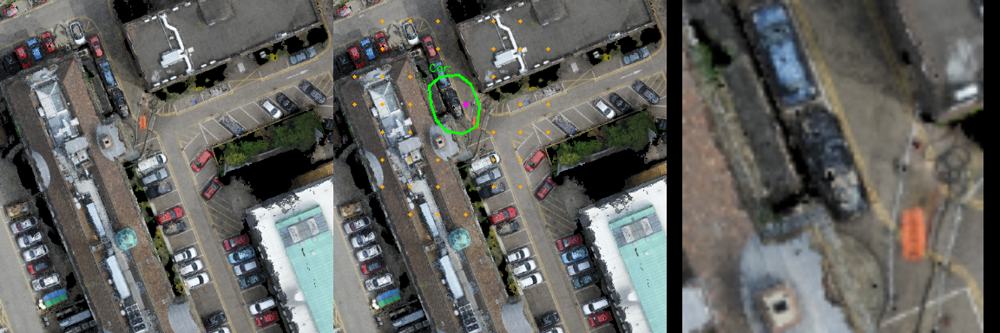
The black car with another black car parked in front of it at the Anatomy building. It has an empty space behind it. It is in between Hopkins building and the Anatomy building.
原生车辆尺寸很小、外观模糊，无法可靠区分相邻黑车实例。
AI弱框：[]；不是已确认实例标签。
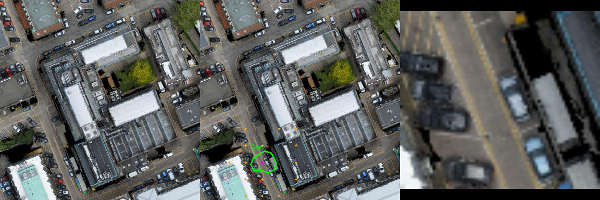
One black car in front of another black car near the corner of Elm Street and Jesus Terrace, in front of a two-story brown home with a gray roof next to a two-story beige house the gray roof and it's backyard with two trees on it
两辆相似黑车都清楚，但in front方向参考未知，不能仅按投影圈选定实例。
AI弱框：[]；不是已确认实例标签。
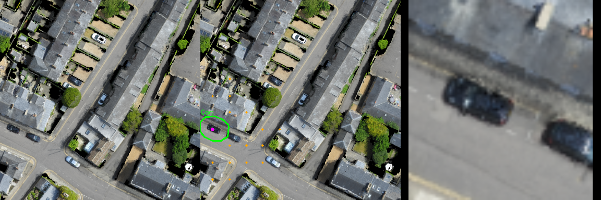
A black car parked in the parking area of the building named One stop, it is parked at the right side of the eighth lane with a white car parked at its right side. There is no car parked at the left side and back side of it.
原始384px视野内车辆很小，放大后仍缺细节；第八车道等关系不足以确认像素实例。
AI弱框：[]；不是已确认实例标签。
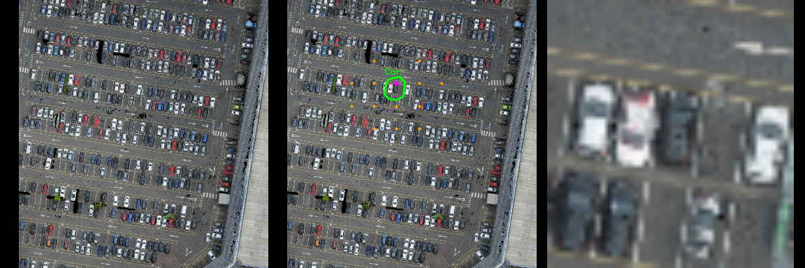
In between salmon Lane and Fitzroy Lane there is a large parking lot this black car is in the bottom of the middle column row there is an open parking space next to it and then on the other side there is a silverish car. It is right next to a ramp going up or down a floor
坡道附近可辨黑车、空位及银灰邻车，黑车可作弱框候选。
AI弱框：[[157, 188, 266, 223]]；不是已确认实例标签。
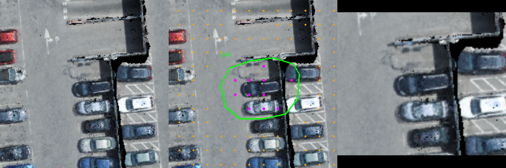
Three cars red-lined, one red one black and one white, parked in front of a tree, in between the mineralogy building and the physiology building off Downing Place
原文描述红、黑、白三辆车组成目标组，不能强制当成单辆车或把组内车互作负例。
AI弱框：[]；不是已确认实例标签。
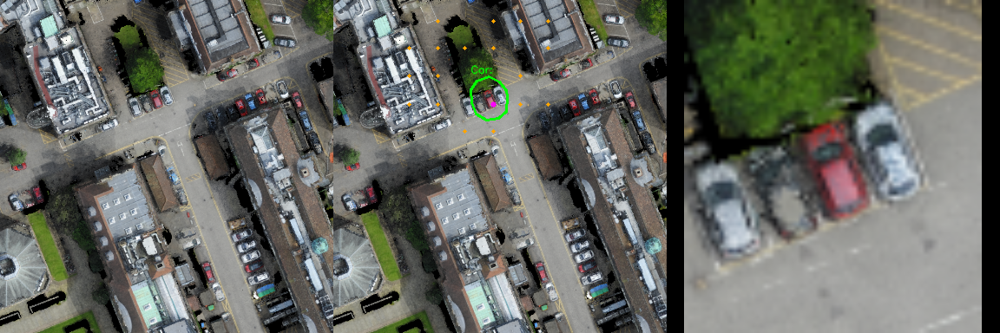
Light gray or silver car that is parked alongside Belvoir Road behind a very small navy car, and is near the intersection of Belvoir Road and Manhattan Drive.
路边较长浅灰/银色车辆及前方深色小车可见，可作弱框候选。
AI弱框：[[155, 192, 195, 209]]；不是已确认实例标签。
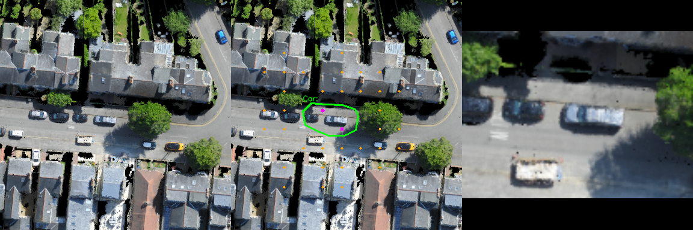
Between Trumpington Road and The Fen Causeway, this white car is in front of the James Dyson Building, sixth car from the right.
区域内相邻白车不止一辆，第六辆及起算端未可靠确认。
AI弱框：[]；不是已确认实例标签。
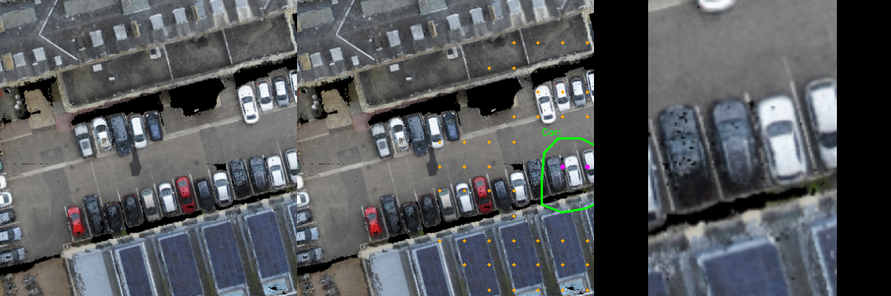
A black car in between another black car and a red car, with a black car across from it, in the parking lot in between the James Dyson building and the Royal Cambridge Hotel off trumpington road
红车和另一黑车之间的深色车可辨，局部between关系有部分支持。
AI弱框：[[118, 236, 131, 263]]；不是已确认实例标签。
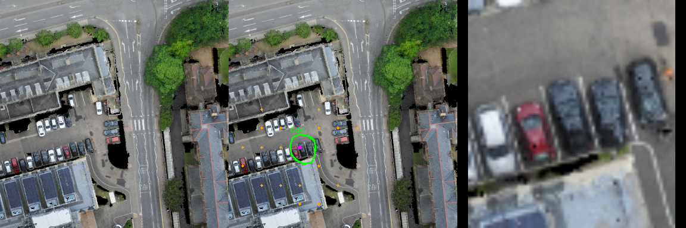
This is a white car parked in the courtyard of Psychology Workshop Building. There is one empty spot on its right and left sides and a tree in front of it.
院落中白车及两侧空位清楚，旁边树木可见，适合弱框候选。
AI弱框：[[41, 182, 87, 207]]；不是已确认实例标签。
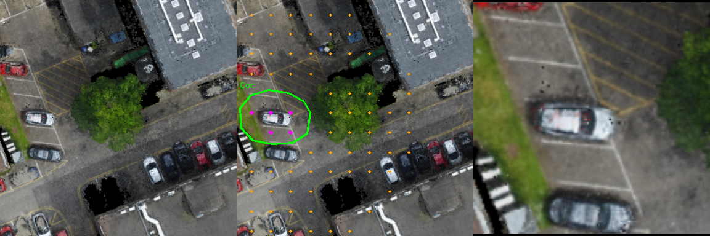
One white car behind a black car one new Square Road toward the edge of the map in between a large Grassfield and a multi-unit tan house
路边独立白车与草地/房屋上下文可见，前方黑车关系未全部核验。
AI弱框：[[188, 174, 206, 205]]；不是已确认实例标签。
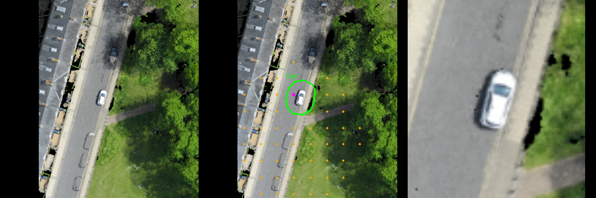
A blue car parked in the parking lot located between Genetics Building and Hopkins Building. The car is parked between a red car and a light grey car.
红车与浅灰车之间的蓝车可辨；原始粗轮廓包含三车，不宜整块作正例。
AI弱框：[[308, 242, 366, 276]]；不是已确认实例标签。
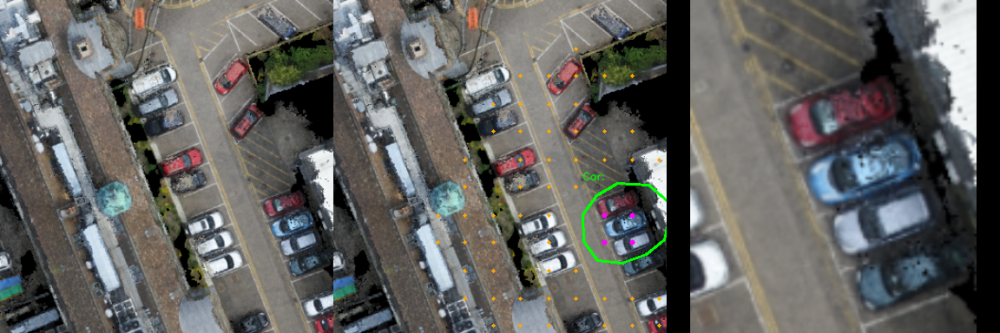
The red car and black car parked next to each other Between the Hopkins Building and the Genetics Building.
原文明确red car and black car为成对目标，需集合标注而非强制单车实例。
AI弱框：[]；不是已确认实例标签。
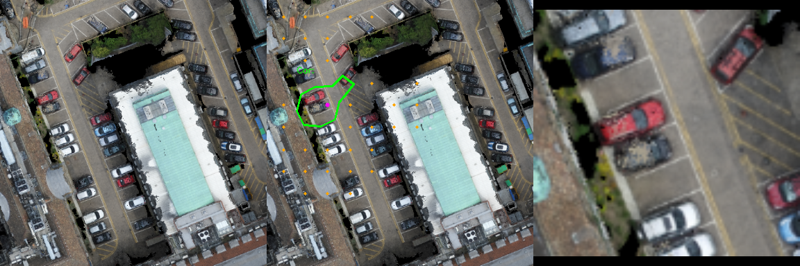